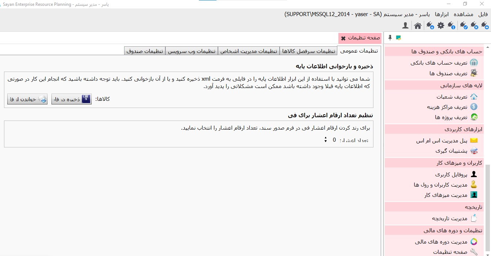
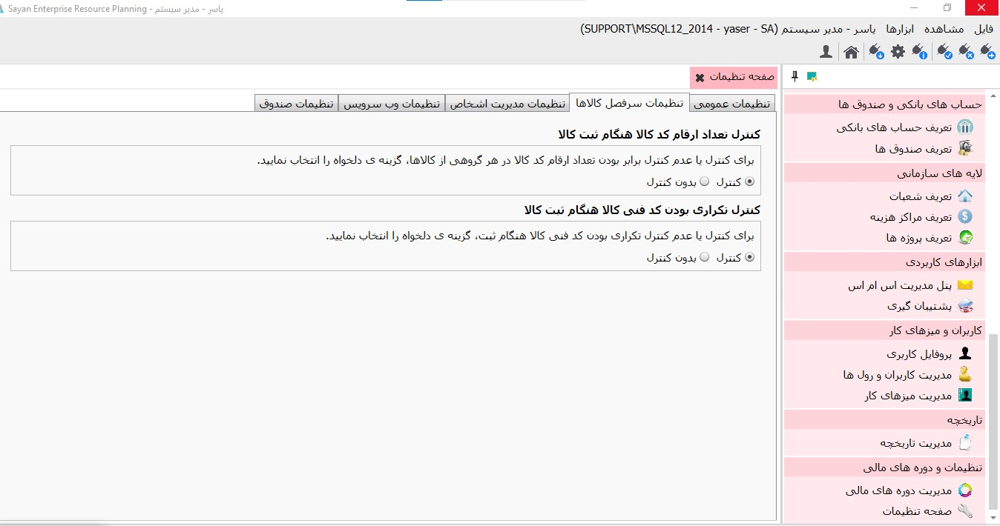
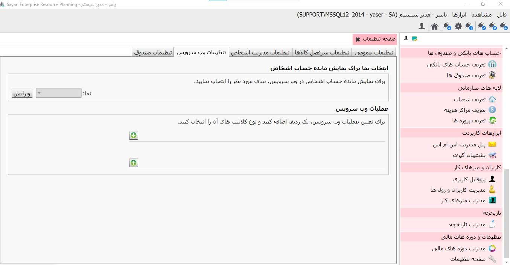

در صفحه تنظیمات امکانات «تنظیمات عمومی»، «تنظیمات سرفصل کالاها»، «تنظیمات مدیریت اشخاص» «تنظیمات وب سرویس» برای شما پیاده سازی شده است. در قسمت تنظیمات عمومی، همانند تصویر زیر امکان ذخیره و بازخوانی اطلاعات کالاها از طریق 1.ذخیره در فایل و 2.خواندن از فایل فراهم گردیده است. 1.به کمک دکمه ذخیره در فایل شما می توانید اطلاعات کالاهای ثبت شده را در قالب «xml» بر روی کامپیوتر خودتان ذخیره نمایید. 2.علاوه بر آن امکان به روزرسانی اطلاعات کالاها از طریق این ابزار فراهم گردیده است. برای این منظور کافی است روی دکمه «خواندن از فایل» کلیک و اطلاعات فایل موردنظر را بازیابی نمایید. لازم به توضیح است که تنها اطلاعاتی قابل بازیابی است که در قالب «xml» ذخیره شده باشد.

برای تنظیمات نوع کد بندی کالاها، کافیست که «کنترل» و «بدون کنترل» در حالت انتخاب قرار دهید.
 در تنظیمات وب سرویس، تنها کافیست «نوع عملیات » و «نوع کلاینت» های موردنظرتان را تعیین نمایید. لازم به توضیح است که برای عملیات های گوناگون در نرم افزار سایان امکان تعریف وب سرویس وجود دارد. برای این منظور کافیست روی دکمه «اضافه کردن عملیات» کلیک کنید. و پس از اعمال تغییرات دکمه ثبت را کلیک نمایید. بدیهی است پس از ثبت تغییرات امکان ویرایش و یا حذف نیز برای شما فراهم گردیده است.
